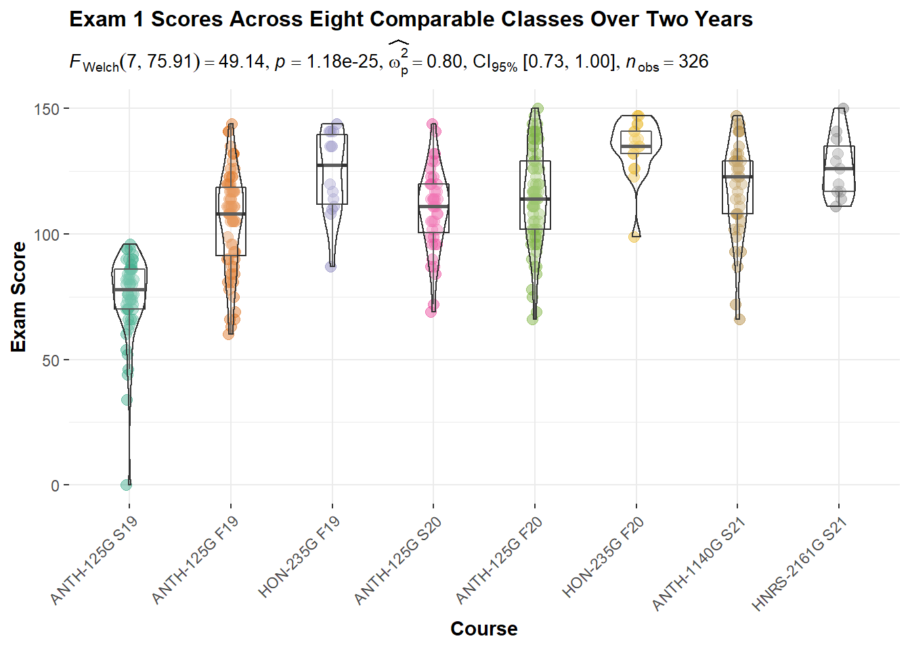

Canvas LMS and R
Summary of methods to use R for creating exams in Canvas, uploading those exams, as well as retrieval and analysis of grade books from single and multiple classes.
Having just recently submitted grades this Monday, I took a few minutes to write up some of the ways that I’m using R language resources with Canvas Learning Management System (LMS). I’ve documented the work flow that I use to:
- create exams using R
- import those exams to Canvas
- retrieval of individual Canvas class grade books using R
- basic exploratory data analysis of a single course Canvas grade book
- retrieval of multiple Canvas class grade books
- basic analysis of multiple Canvas grade books
To learn more about this work flow please visit the repository website.
Creating Exams
I began using R with Canvas during the pandemic. As classes were moved online I needed to port physical paper exams taken in person on Scantron to the university’s online LMS which happens to be Canvas. I generally write questions in plain text and find Canvas’s quiz question creation tool incredibly cumbersome. There are paid for tools to convert text or word documents to a Canvas quiz, and I tried one of the demos but I didn’t care for it. Fortunately, there is the wonderful R/Exams or simply exams package which, among its many functions, allows one to convert a series of R Markdown files into an exam which can be imported into Canvas.
Retrieving Grades
I generally keep a spreadsheet in each class that contains grade information. However, I find that from class to class or semester to semester, I usually end up manipulating each grade book in slightly different ways. While looking at grades isn’t exactly “research” there is some investigation going on. Therefore, I seemed like the reproducible research philosophy of R would lend itself well to consistency in the treatment of grades.
Fortunately, there is the rcanvas library that allows one to make a secure connection to Canvas. From there, it is possible to retrieve a class list and individual course grade books. There are several other functions that I have not explored.
In addition to retrieving the grade books, I go through a few of the wrangling methods for getting the data into shape for a bit of EDA.
Analysis of Grades
I’ve taught some of the same classes on different semesters and different years. For some time, I’ve been keen to look at grade trends over time. The use of rcanvas and tidyverse functions along with plotting libraries like ggplot2 and ggstatsplot made this possible and reproducible.
I hope dear reader that you will find my documentation of how I use R with Canvas useful.

exams package, grades were retrieved by the rcanvas package.